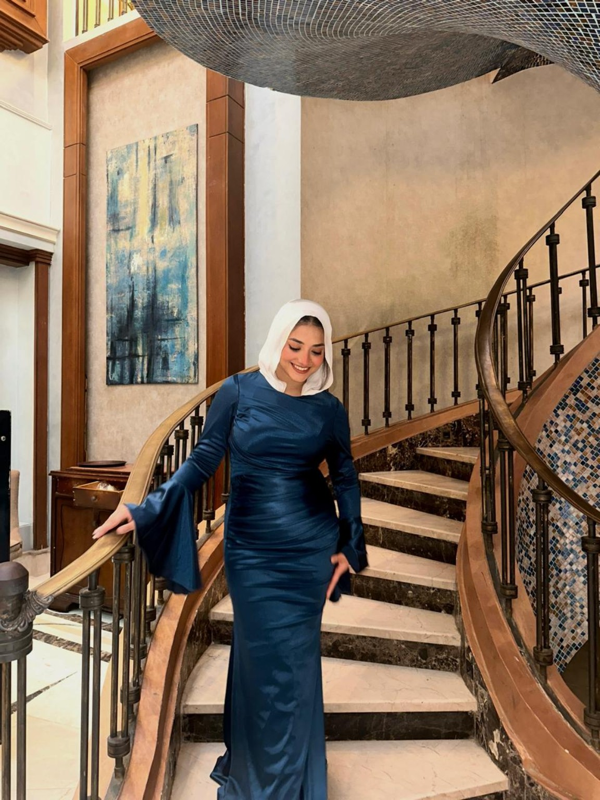
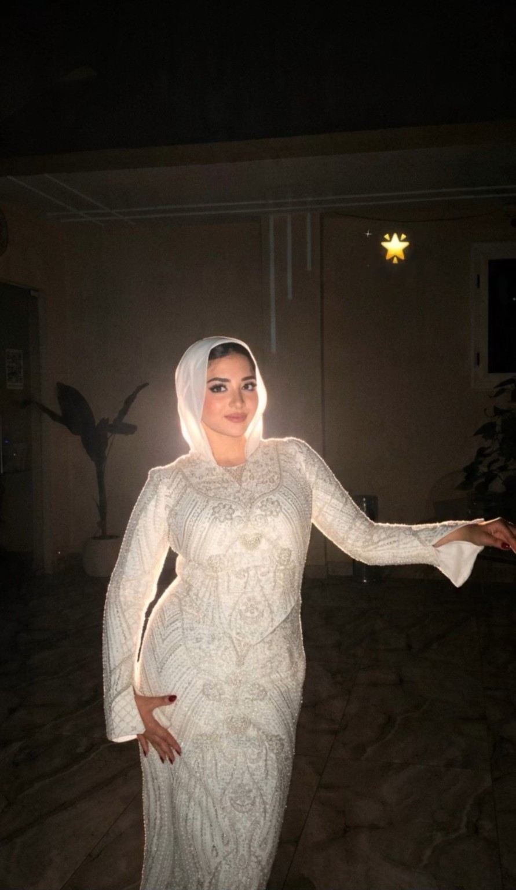

Happy Birthday, Roro 🌸
Every moment with you, Raneem, feels like a beautiful story.
I never want to end.
You have the kindest, purest soul, and somehow you make everything brighter.
For three years, you’ve been the best thing that ever happened to me.
I care about you more than words can ever say. 💞


A little birthday surprise
21 Things I Love About You
Twenty-one little reminders of why you are so special to me. Tap each card, Roro. 💗
0 of 21 little things discovered ✨
And last but definitely not least, I love you for being you. Not because you have to do anything special, not because you have to be perfect, and not because you have to be anything other than yourself. I love all the little things that make you who you are, and I'm so glad that out of all the people in this world, I got to know you. ❤️
Happy 21st Birthday, Raneem 🌸